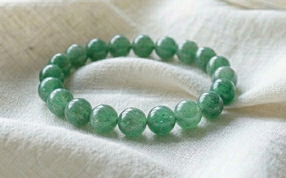

atsuko様
詳細のご希望、ありがとうございます。
atsuko様のために選んだ石について、
詳しくお伝えしますね。
atsuko様の命の流れを視させていただき、
今のatsuko様に最も必要な石を
3つ選びました。
atsuko様は、
曖昧なことを曖昧なままにせず、
「これだ」と決めたら
自分の足でまっすぐ進める
鋭く澄んだ力を
生まれ持った方です。
家族の毎日を支えながら、
誰に褒められなくても
手を抜かずにやり遂げてきた
責任感の強さがあります。
でも、
お店で気に入った一つを手に取ったあと、
頭の中で今月の残りを計算して
「これは、今じゃなくていい」と
そっと棚に戻してしまう感覚が
繰り返されやすい流れがあります。
2026年12月、
そして2027年の立春。
この時期を経て、
決める力という刃を
鞘から出していける流れが
すでに動き始めています。
その流れを最大限に活かすために、
atsuko様のエネルギーと
経津主神（ふつぬしのかみ）が
深く共鳴する3つの石を選びました。

澄んだ水の青を宿した、
声を押し出す石です。
atsuko様の、
本物を見抜く澄んだ力と
最も深く共鳴します。
家族に「どっちがいい？」と聞かれて
「私はどっちでも」と言いかけるその直前、
喉元で止まりそうな言葉を
澄んだまま声に出すところを
そっと支えてくれます。

経津主神と最も共鳴が強い石です。
若葉のような緑を宿した、
決めたことを手放さない石です。
atsuko様の命の流れには、
守る力の強さと、
自分の分を後ろに回す癖が
同居しています。
グリーンアベンチュリンは、経津主神の守護を日常の中で
ずっとそばに置いておける石です。
言ったあとに、
決めたことを手放さず
一歩を踏み出す落ち着きを
そっと助けてくれます。

月の光を宿した、
見守りの石です。
「今日は決めそびれた」
「また家のことを先にしてしまった」と
夜に自分を責めてしまうとき、
その自責のループを
静かにほどいてくれます。
自分の分を後ろに回す優しさを止めるのではなく、
言えなかった日も
明日また言えるように、
やわらかな方向へ整えてくれる石です。
アクアマリン・グリーンアベンチュリン・ムーンストーン。
この3つをatsuko様専用に組み合わせて、
一つひとつ手作りで仕上げます。
経津主神への祈祷と
エネルギーチャージを込めて、
atsuko様のもとへお届けします。
身につけていくうちに、
「今日の分は、私が決める」と
言える日が
少しずつ増えていきます。
家族の予定が立て込んだ夕方、
レジの前で
手に取った自分の分を、戻したくなる瞬間。
そういう揺らぎのとき、
石が、そのループをほどくのを
静かに支えてくれます。
日常の中で、守護がそばにある。
そして2026年12月、
経津主神の力が最も強く届く月に、
エネルギーを整えて
迎えやすくなります。
atsuko様の場合、
2026年12月から、
自分の分を自分で決める練習が根づきはじめ、
2027年の立春を過ぎた頃から、
楽しむことが豊かさにつながっていく流れがあります。
パワーストーンのエネルギーが
しっかりと馴染むまでには、
通常2〜3週間ほどかかります。
今から始めることで、
2026年12月を迎える頃には
エネルギーが馴染んだ状態で
迎えやすくなります。
- ご注文から十日以内にお送りします
- 追跡番号付きで安心
- 専用の浄化・エネルギーチャージ済みでお届けします
今回ご購入いただいた方には：
- パワーストーンの取扱い・浄化方法のご案内
- ご購入から3ヶ月間、気になることがあればいつでもご相談いただけます
ご希望の方は、下のボタンよりお進みください。
ブレスレットを希望する
※ 別ウィンドウで購入ページが開きます
お値段のことは、
どうぞ無理のない範囲で
ご自分のペースで決めてくださいね。
ご不明な点があれば、
お気軽にお尋ねくださいね。
atsuko様が、
「今日の分は、私が決める」と
ご自身に許したその瞬間から、
経津主神の守護が、
atsuko様の決める力を
静かに支え始めます。
どうか、これからは
湯呑みを手に、
自分で選んだ一日を
ご自分の手で受け取る日々を
迎えてくださいね。